품질경영산업기사 (2017-09-23 기출문제)
1과목: 실험계획법
1. 다음은 1요인실험을 하여 얻어진 분산분석표의 일부이다. 요인 의 기여율은 얼마인가?
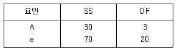
- 19.5%
- 23.0%
- 30.0%
- 40.5%
(정답률: 52%)

2. 모수요인 A의 수준수가 4, 반복 5회의 1요인실험에서 ST=2.478, SA=1.690, Se=0.788일 때, 95% 신뢰 구간으로 오차분산(
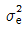
)을 추정하면 약 얼마인가? (단,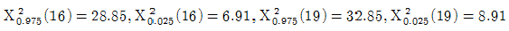
이다.)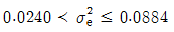
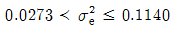
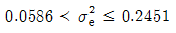
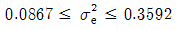
(정답률: 58%)
3. 실험계획법에서 사용하는 모수요인의 특징에 관한 설명으로 틀린 것은?
- 수준이 기술적인 의미를 가진다.
- 수준의 선택이 랜덤하게 이루어진다.
- 요인 A의 주효과(ai)들의 합은 0이다.
- 요인 A의 주표과(ai)들 간의 산포의 척도로서
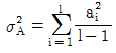
을 사용한다.
(정답률: 51%)
4. 난방용품의 판매량(y)와 기온(x)와의 관계가, Sxx=19.6200, Syy=804.2220, Sxy=-121.8000일 경우, 결정계수(기여율)은 약 얼마인가?
- 2.3%
- 2.5%
- 8%
- 94%
(정답률: 66%)
5. 수준 수(ℓ)은 4, 반복수(m)이 3인 1요인실험에서 분산분석을 한 결과 Ve=0.0212이고,
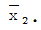
=8.70이었다. μ(A2)값을 유의수준 α=0.⑤로 신뢰구간을 추정한 것으로 맞는 것은? (단, t0.95(8)=1.860, t0.975(8)=2.306이다.)- 8.506≤A2≤8.894
- 8.532≤A2≤8.868
- 8.544≤A2≤8.856
- 8.565≤A2≤8.835
(정답률: 61%)
6. 라틴방격법에서 요인 A, B, C중 A, B 두 요인만이 유의하여 최적수준조합에서 모평균을 추정하고자 한다. 이때 각 요인의 수준수가 3이라면 유효반복수 ne는 얼마인가?
- 1.8
- 2.4
- 3.0
- 3.6
(정답률: 62%)
7. 어떤 화학반응 실험에서 농도를 4수준으로 하여 실험한 결과 아래와 같은 데이터를 얻었다. 이 데이터로 분산분석한 결과 Ve=0.⑤11이었다면 μ(A2)와 μ(A4)의 두 평균치차를 신뢰율 99%로 구간추정하면? (단, t0.99(9=2.821, t0.995(9)=3.250이다.)
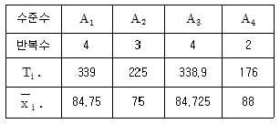
- 12.⑤1≤|μ(A2)-μ(A4)|≤13.948
- 12.177≤|μ(A2)-μ(A4)|≤13.823
- 12.329≤|μ(A2)-μ(A4)|≤13.671
- 12.418≤|μ(A2)-μ(A4)|≤13.582
(정답률: 58%)
8. 어떤 화학공장에서 제품의 수율(%)에 영향을 미칠 것으로 생각되는 반응온도(A)와 원료(B)를 각각 5수준, 4수준으로 반복이 없는 2요인실험을 하였다. 오차항의 자유도는?
- 3
- 4
- 12
- 19
(정답률: 66%)
9. 2수준 직교배열표에서 각 열의 제곱합을 구하는 식으로 맞는 것은?
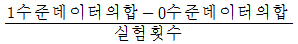
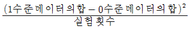
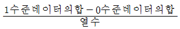
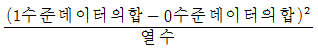
(정답률: 74%)
10. L8(27)직교배열표에서 4개의 요인 A, B, C, D를 다음과 같이 배치하였을 때 A×C교호작용은 몇 열에 배치되는가?
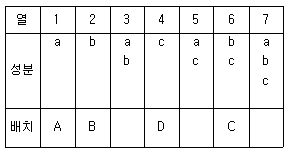
- 3열
- 4열
- 5열
- 7열
(정답률: 70%)
11. 기계에 따라 부적합품의 동일성 여부를 알아보기 위해 1요인 계수치 실험을 한 결과가 아래 표와 같다. 계산된 값이 틀린 것은?
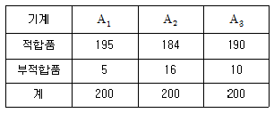
- CT=1.602
- SA=0.303
- ST=29.398
- ve=596
(정답률: 50%)
12. 반복이 없는 2요인실험에서 A(모수)요인이 5수준, B(모수)요인이 6수준으로 분산분석한 결과, A 와 B요인이 모두 유의할 때 유효반복수(ne)은?
- 1
- 2
- 3
- 4
(정답률: 64%)
13. 난괴법에 의한 실험에서 다음의 분산분석표를 얻었다. 변량요인 B의 분산추정값
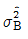
은?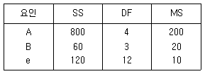
- 2
- 2.5
- 20
- 38
(정답률: 47%)
14. 요인 A(모수요인)가 5수준인 1요인실험에서 총 15회의 실험을 하였다. 총자유도(vT)를 구하면? (단, 결측치 1개가 발생하였다.)
- 12
- 13
- 14
- 15
(정답률: 55%)
15. A가 4수준, B가 3수준, 반복 2회인 모수모형 2요인실험에서 유효반복수(ne)의 값은? (단, A, B요인은 유의하고, 교호작용은 유의하지 않다.)
- 2
- 3
- 4
- 5
(정답률: 50%)
16. 아래의 보기와 같은 변량모형(random effect model)에서 분산분석의 결과를 이용한
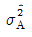
의 추정치는 얼마인가?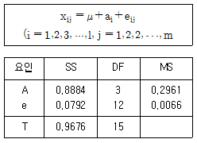
- 0.0356
- 0.0724
- 0.0965
- 0.1678
(정답률: 55%)
17. 수준이 K인 라틴방격법에서 총 제곱합에 대한 자유도는?
- (k-1((k-3)
- k-1
- (k2-1)(k-2)
- k2-1
(정답률: 50%)
18. 아래의 반복이 없는 2요인실험의 분산분석표를 유의수준 α=0.⑤의 조건으로 맞게 해석한 것은? (단, F0.95(3.9)=3.86이다.)
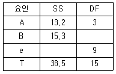
- A요인만 유의하다.
- B요인만 유의하다.
- A, B 모두 유의하다.
- A, B 모두 유의하지 않다.
(정답률: 61%)
19. 난괴법은 어느 구조모형에 해당되는가?
- 모수모형
- 변량모형
- 혼합모형
- 대응이 있는 변량모형
(정답률: 66%)
20. 요인이 하나인 각 수준의 실험에서 반복수가 같지 않은 실험을 하는 일반적인 이유로 가장 거리가 먼 것은?
- 전체 실험수를 줄이고 싶은 경우
- 어떤 수준에서 실험에 실패한 경우
- 특정 수준의 추정 정도를 높게 하고 싶은 경우
- 어떤 수준에서 실험결과치의 측정에 실패한 경우
(정답률: 43%)
2과목: 통계적품질관리
21.  관리도에서
관리도에서
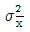
=17.8084, 공정의 군내변동(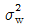
)＝4.4944, 군간변동(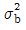
)＝16.6848이라면 시료의 크기(n)는 얼마인가?- 3
- 4
- 5
- 6
(정답률: 49%)
22. 계량형 관리도에 대한 설명으로 맞는 것은?
- 관리도는 계량형 관리도로 분류된다.
- 계수형 관리도에 비하여 많은 정보를 얻지 못한다.
- 온도, 압력, 인장강도, 무게 등은 계량형 관리도로 관리한다.
- 일반적으로 시료의 크기가 계수형 관리도에서 요구하는 것보다 크다.
(정답률: 65%)
23.  관리도로부터 관리계수(Cf)가 1.0임을 알았다. 이 공정은 어떤 상태인가?
관리도로부터 관리계수(Cf)가 1.0임을 알았다. 이 공정은 어떤 상태인가?
- 군구분이 나쁘다.
- 급간변동이 크다.
- 대체로 관리상태로 볼 수 있다.
- 이상원인의 영향이 지나치게 많다.
(정답률: 64%)
24. 샘플링에서 주기성에 의한 치우침이 들어갈 위험을 방지하기 위해, 하나씩 걸러서 일정한 간격으로 샘플을 취하는 방법은?
- 계통 샘플링
- 단순랜덤 샘플링
- 2단계 샘플링
- 지그재그 샘플링
(정답률: 65%)
25. 정규분포에 관한 설명으로 맞는 것은?
- 첨도는 1이다.
- 이산형 확률변수이다.
- 평균에 대해 좌우대칭인 확률분포이다.
- 자유도를 알아야 수표를 사용할 수 있다.
(정답률: 64%)
26. 계수형 샘플링검사 절차－제1부：로트별 합격품질한계(AQL) 지표형 샘플링검사(KS QISO 2859－1：2014)을 설명한 것으로 틀린 것은?
- 구매자가 연속로트라고 인정하는 경우 적용할 수 있다.
- 주 샘플링 보조표에 의한 보통검사는 Ac가 1/2, 1/3, 1/5의 검사가 있다.
- 분수 합격판정개수 샘플링검사는 소관권한자가 승인하는 경우 적용할 수 있다.
- 주 샘플링표에 의한 검사와 분수합격판정개수가 적용되는 주 샘플링 보조표에 의한 검사가 있다.
(정답률: 44%)
27. 어떤 구입부품의 로트로부터 5개의 시료를 랜덤 샘플링하여 길이를 측정한 결과 다음의 데이터를 얻었다. 이 구입부품의 모평균의 신뢰구간을 신뢰율 95%로 추정하면 약 얼마인가? (단, 로트 내 부품의 길이에 대한 모표준편차는 0.5m로 알려져 있다.)
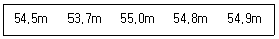
- 54.58±0.39m
- 54.58±0.44m
- 58.54±0.57m
- 58.54±0.62m
(정답률: 54%)
28. 관리도의 수리에서 사용되는 A를 구하는 식은?
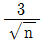
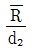
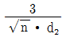
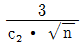
(정답률: 41%)
29. 군내변동과 군간변동에 대한 설명으로 틀린 것은?
- 군내변동과 군간변동이 같을 때 이상원인이 나타난다.
 관리도에서
관리도에서 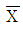
의 군내변동은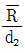
이다.- 군내변동이 커질수록
 의 산포는 커진다고 할 수 있다.
의 산포는 커진다고 할 수 있다. 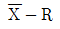
관리도에서는 주로 군내변동을 기준으로 하여 군간변동의 크기를 감시하고 있다고 할 수 있다.
(정답률: 50%)
30. 다음 데이터에서 중앙값(Median)은 얼마인가?
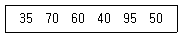
- 40
- 50
- 55
- 60
(정답률: 72%)
31.  관리도에 있어서
관리도에 있어서  관리도는 공정평균의 변화를 알아보기 위해 사용하는데, R관리도는 무엇을 알아보기 위한 것인가?
관리도는 공정평균의 변화를 알아보기 위해 사용하는데, R관리도는 무엇을 알아보기 위한 것인가?
- 데이터의 경향
- 부분군 간의 행동
- 공정평균의 치우침
- 공정의 산포 관리
(정답률: 60%)
32. 상관계수에 관한 설명으로 틀린 것은?
- 상관계수의 제곱을 결정계수라 한다.
- 두 변수간에 관계가 적을수록 상관계수는 0에 가까워진다.
- 상관계수의 값이 1에 가까울수록 일정한 경향선으로부터의 산포는 커진다.
- 상관계수의 값이 －1에 가까울수록 일정한 경향선으로부터의 산포는 작아진다.
(정답률: 47%)
33. 재가공이나 폐기처리비를 무시할 경우, 무검사비용(불량발생으로 인한 손실비용)은 어떻게 산출되는가? (단, N은 전체로트크기, a는 개당 검사비용, b는 개당손실비용, p는 부적합품률이다.)
- bpN
- apN
- aN
- bN
(정답률: 70%)
34. OC 곡선에 관한 설명으로 가장 적절한 것은?
- 부적합품률과 로트가 합격될 확률은 관계가 없다.
- 부적합품률이 커지면 로트가 합격될 확률은 커진다.
- 부적합품률이 작아지면 로트가 합격될 확률은 적어진다.
- 부적합품률이 커지면 로트가 합격될 확률은 적어진다.
(정답률: 72%)
35. t 분포에서 자유도가 무한히 커지면 어떤 분포에 근사하게 되는가?
- F 분포
- 정규 분포
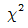
분포- 푸아송 분포
(정답률: 60%)
36. 검·추정에 관련된 설명으로 틀린 것은? (단, α는 제1종 오류, β는 제2종 오류이다.)
- α를 크게 할수록 검출력은 작아진다.
- 모표준편차를 작게 할수록 검출력은 커진다.
- 시료의 크기가 일정하면, α를 크게 할수록 β는 작아진다.
- α를 일정하게 하고, 시료의 크기를 크게 할수록 β는 작아진다.
(정답률: 41%)
37. 전구 10개의 수명을 측정하였더니 평균(
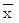
)이 1200시간, 표준편차(s)가 75시간이었다. 전구수명의 모분산(σ2)의 95% 신뢰구간은 약 얼마인가? (단, 이다.)- 52~137
- 296~2083
- 2472~15576
- 2662~18750
(정답률: 23%)
38. 700개의 부품을 검사하였더니 670개는 적합품이고, 30개는 부적합품이다. 부적합품 중 20개는 각각 1개의 부적합을 가지고 있고, 나머지 10개는 각각 2개의 부적합을 가지고 있다. 이 로트의 100 아이템 당 부적합수는 약 얼마인가?
- 0.043
- 0.⑤7
- 4.286
- 5.714
(정답률: 33%)
39. 플라스틱 표면에 특수도장하는 공장에서 핀홀에 의한 부적합을 알아보기 위해 시료 1매를 조사한 결과, 부적합수가 18개가 나왔다면 모부적합수의 신뢰한계는 약 얼마인가? (단, 신뢰율은 95%이다.)
- 8.202~23.80
- 3.684~26.316
- 17.065~28.946
- 17.538~18.462
(정답률: 43%)
40. 성공확률이 0.4, 시행횟수가 100회인 이항분포와 근사한 확률분포는?
- 평균 40인 푸아송 분포
- 평균 50인 푸아송 분포
- 평균 40, 분산 24인 정규분포
- 평균 50, 분산 24인 정규분포
(정답률: 54%)
3과목: 생산시스템
41. 다음은 가치분석 중 어느 가치에 해당하는가?
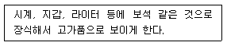
- 매력가치
- 사용가치
- 기회가치
- 교환가치
(정답률: 76%)
42. 작업우선순위규칙(priority rule)에 대한 설명으로 틀린 것은?
- 여유시간법은 여유시간이 큰 순서대로 처리하는 방법이다.
- 긴급률법(Critical Ratio)은 긴급률이 적은 작업부터 먼저 처리하는 방법이다.
- 납기우선법(Earliest Due Date)은 납기예정일이 가장 빠른 작업부터 처리하는 방법이다.
- 최장처리시간법(Longest Processing Time)은 작업시간이 가장 긴 시간을 갖는 작업부터 처리하는 방법이다.
(정답률: 60%)
43. 제품공정분석표에 사용되는 공정도시기호 중 로트 전부가 정체하고 있는 상태를 뜻하는 것은?
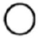
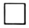
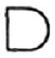
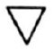
(정답률: 53%)
44. 부분품 가공이나 제품조립이 지정된 시간까지 완성될 수 있도록 기계 내지 작업을 시간으로 배정하고, 작업의 개시와 완료일시를 결정하여 구체적인 생산일정을 계획하는 것은?
- 공수계획
- 공정계획
- 일정계획
- 작업계획
(정답률: 50%)
45. 자동차부품 제조회사에서 주당 1600단위를 생산할 수 있는 생산라인을 설계하려 한다. 공장은 주당 5일 근무에 매일 교대로 8시간 가동된다. 이때 사이클 타임은 얼마인가?
- 30초/단위
- 50초/단위
- 70초/단위
- 90초/단위
(정답률: 59%)
46. PERT(Program Evaluation and Review Technique)에서 기대시간(Expected time)을 추정하는데 사용되는 세 가지 시간에 해당되지 않는 것은?
- 최빈시간
- 최단소요시간
- 최장소요시간
- 50분위시간(메디안)
(정답률: 58%)
47. 셀 생산방식과 관계가 먼 것은?
- 소인화
- 다능화
- 흐름화
- 대량생산
(정답률: 55%)
48. 다음 자료로 EOQ를 구하면 약 얼마인가?
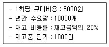
- 700개
- 708개
- 718개
- 728개
(정답률: 61%)
49. Ralph M. Barnes 교수에 의해 개량·보완된 동작경제의 원칙에 해당되지 않는 것은?
- 신체의 사용에 관한 원칙
- 재료의 사용에 관한 원칙
- 작업장의 배치에 관한 원칙
- 공구 및 설비의 디자인에 관한 원칙
(정답률: 47%)
50. 기계설비 성능의 열화방지를 위해 사전에 정해진 기준에 따른 점검 또는 소모품 교체를 실시하는 보전활동의 명칭은?
- 예방보전
- 사후보전
- 개량보전
- 수리보전
(정답률: 54%)
51. 제품의 수요가 안정적일 경우 적용되는 지수평활계수(α)값에 해당되는 것은?
- 0.1
- 0.5
- 0.7
- 0.9
(정답률: 70%)
52. 표준시간 설정방법 중 직접측정법에 속하지 않는 것은?
- 스톱워치법
- 촬영법
- 표준자료법
- 워크샘플링법
(정답률: 60%)
53. 작업자에 의하여 수행되는 개개의 작업내용에 대해 효율적인 요소와 비효율적인 요소 모두에 대하여 분석, 개선하려는 것은?
- 공정분석
- 작업분석
- 동작분석
- 일정분석
(정답률: 60%)
54. 기업이 설비의 효율화를 위해 TPM 활동 등을 추진하는 이유로 맞는 것은?
- 자동화 추진
- 원단위 증가
- 생산성 증대
- 재작업 증대
(정답률: 64%)
55. MRP의 기본적 요소에 속하지 않는 것은?
- MPS
- ROP
- BOM
- IRF
(정답률: 39%)
56. 회초밥집, 김밥전문점 및 일간신문 배달점 등은 어떤 모형으로 자재 및 재고를 관리하는가?
- 콕 재고모형
- 절충식 재고모형
- (s, S) 재고모형
- 단일기간 재고모형
(정답률: 66%)
57. PTS법의 적용을 위한 가정으로 틀린 것은?
- 작업내용은 세분화된 기본동작으로 구성된다.
- 각 기본동작의 소요시간은 몇 가지 시간변동 요인에 의해 결정된다.
- 작업의 소요시간은 동작을 구성하고 있는 각 기본동작의 기준시간치의 합계와 동일하다.
- 변동요인이 같더라도 누가, 언제, 어디서 동작을 행하느냐에 따라 기준시간치는 다르다.
(정답률: 68%)
58. 컴퓨터를 비롯한 정보시스템 및 시스템 경영의 지원을 받아 제품설계, 공정설계 및 관리, 제조, 종합관리 기술 등의 생산시스템을 전체적으로 통합하는 것은?
- CAD
- CMS
- CIM
- FMS
(정답률: 45%)
59. JIT시스템과 MRP시스템의 비교 중 틀린 것은?
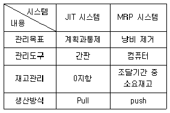
- 관리목표
- 관리도구
- 재고관리
- 생산방식
(정답률: 63%)
60. 5개의 활동 A, B, C, D, E로 구성된 프로젝트의 조건이 다음과 같을 때, AOA(Activity On Arrow)네트워크로 최소한의 가상활동을 이용하여 표현하고자 하는 경우 최소 몇 개의 가상활동(Dummy Activity)이 필요한가?
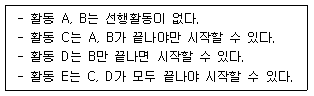
- 0개
- 1개
- 2개
- 3개
(정답률: 50%)
4과목: 품질경영
61. 상호 이해관계에 따라서 정해진 표준 중 물체에 직접 또는 간접으로 관계되는 기술적 사항에 대하여 규정된 기준을 뜻하는 표준화에 관한 용어는?
- 형식(Type)
- 종류(Class)
- 등급(Grade)
- 규격(Technical standard)
(정답률: 68%)
62. 품질분임조활동의 문제해결과정에서 목표설정의 기준으로 적합하지 않는 것은?
- 독창적인 목표달성
- 간단명료한 목표설정
- 분임조 수준에 맞는 목표설정
- 구체적이고 측정 가능한 목표설정
(정답률: 74%)
63. 공정을 ±3σ로 관리할 때 CP=1인 경우 치우침이 없다면 예상되는 부적합품률은 몇 ppm인가?
- 2.7ppm
- 27ppm
- 270ppm
- 2700ppm
(정답률: 54%)
64. 제조공정 중에 제품의 제조나 검사, 시험 등의 작업에 대하여 품질을 확보하기 위해 작업의 합리적 방법, 순서, 처리조건 등을 정한 표준은?
- 작업표준
- 설계표준
- 검사표준
- 관리표준
(정답률: 66%)
65. 결과에 원인이 어떻게 관계하고 있는가를 한 눈에 알아볼 수 있도록 작성한 그림은?
- 층별
- 체크시트
- 관리도
- 특성요인도
(정답률: 70%)
66. 초우량기업의 상품이 품질면에서 좋은 평가를 받고 있는 이유는 소비자가 요구하는 품질의 해석에 노력했기 때문이다. 이러한 활동에 관한 설명으로 틀린 것은?
- 소비자가 요구하는 품질의 해석을 위해서는 우선 참특성이 어떤 것인지를 파악해야 한다.
- 참특성들을 어느 정도 나타내어 대응특성을 만족시킬 수 있는지 관계를 올바르게 파악해두어야 한다.
- 참특성을 어떻게 측정하고 시험할 것인가, 그리고 품질수준을 얼마로 할 것인가 등을 뚜렷이 한 다음 이에 영향을 준다고 생각하는 대응특성을 선정한다.
- 품질설계를 비롯하여 제품개발이나 기술분야의 선정에 있어서 “우리의 고객이 무엇을 원하고 이를 어떻게 하면 만족시킬까”라는 고객요구의 만족을 목표로 하는 개발자세가 필요하다.
(정답률: 52%)
67. 표준의 서식과 작성방법(KS A 0001：2015)에서 문장 쓰는 방법에 대한 설명으로 맞는 것은?
- “때”는 선택의 의미로 사용한다.
- “및”은 병합의 의미로 사용한다.
- “또는”은 한정조건을 나타내는 데 사용한다.
- “이상”은 그 앞에 있는 수치를 포함하지 않는다.
(정답률: 71%)
68. 기업이 외부로부터 자재나 부품을 조달하는 데에는 품질상의 여러 가지 이유가 존재한다. 다음 설명 중 해당되지 않는 것은?
- 공급자의 전문성을 기대할 수 있기 때문이다.
- 개발부품을 일정기간 보유할 필요가 있기 때문이다.
- 자재의 소요량이 소량일 경우, 외부조달이 유리하기 때문이다.
- 기업을 새로이 신설하였다면 많은 부품을 외부에서 조달하는 것이 유리한 경우가 많다.
(정답률: 55%)
69. 국가와 국가규격이 잘못 짝지어진 것은?
- 호주－AS
- 미국－ANSI
- 독일－DIN
- 프랑스－GOST
(정답률: 61%)
70. A. R. Tenner는 고객이 기대하는 제품과 서비스의 품질특성을 3단계 계층 구조로 나누고 있다. 가장 낮은 단계로부터 높은 단계의 순서로 나열한 것은?
- 명시적 시방 및 요건 → 내면적인 기쁨(감동) → 묵시적 요구
- 묵시적 요구 → 명시적 시방 및 요건 → 내면적인 기쁨(감동)
- 명시적 시방 및 요건 → 묵시적 요구 → 내면적인 기쁨(감동)
- 묵시적 요구 → 내면적인 기쁨(감동) → 명시적 시방 및 요건
(정답률: 67%)
71. 품질관리조직을 계획하는데 이용되는 도구로서 조직원의 상하관계를 나타내는 것은?
- 조직도표
- 직무 내용서
- 책임 분담표
- 작업 지시서
(정답률: 76%)
72. 축과 구멍에 대한 수치가 표와 같이 주어졌을 때, 억지끼워맞춤의 최대죔새와 최소죔새는 각각 얼마인가?
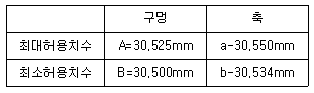
- 최대죔새：0.011mm, 최소죔새：0.030mm
- 최대죔새：0.040mm, 최소죔새：0.010mm
- 최대죔새：0.⑤0mm, 최소죔새：0.009mm
- 최대죔새：0.075mm, 최소죔새：0.025mm
(정답률: 67%)
73. 제품의 설계단계에서 도면이나 시제품에 대한 설계심사(Design Review)가 이루어지는데, 설계단계의 DR에 대한 설명으로 틀린 것은?
- DR은 예비, 중간, 최종심사로 각각 구분된다.
- DR은 제품이 소비자 입장에서 실용성이 있는가를 평가하고 검토한다.
- DR은 원재료나 부품의 검사활동과 완제품에 대한 신뢰성 검사에 대해 검토한다.
- DR은 계획된 제조, 수송, 설치, 사용, 보전 등의 과정에 대해서 개선점을 찾는다.
(정답률: 41%)
74. 어떤 제품의 규격이 5.600~5.670mm이고, 표준편차가 0.0215mm이었다. 공정능력비는 약 얼마인가?
- 0.13
- 0.54
- 1.74
- 1.84
(정답률: 35%)
75. 문제가 되고 있는 사상 가운데서 대응되는 요소를 찾아 이것을 행과 열로 배치하고, 그 교점에 각 요소간의 연관유무나 관련정도를 표시하여 이 교점을 착상의 포인트로 하여 문제 해결을 효과적으로 추진해 가는 방법은?
- PDPC법
- 친화도법
- 매트릭스도법
- 관리도법
(정답률: 63%)
76. 계측관리체제 정비의 목적이 아닌 것은?
- 제품의 품질향상
- 사용소비의 합리화
- 검사업무의 효율화
- 관리업무의 효율화
(정답률: 66%)
77. 품질비용에 관한 설명으로 틀린 것은?
- 품질비용은 예방비용, 평가비용, 실패비용이 있다.
- 재가공 및 수리비용은 내부 실패비용으로 간주 된다.
- 쥬란은 예방비용과 평가비용을 묶어 실패비용과 반비례 관계로 표현하였다.
- 현대적 관점에서 품질을 향상시킬수록 총품질비용은 기하급수적으로 증가한다.
(정답률: 58%)
78. 한국산업표준에서 “조선”에 해당되는 분류기호는?
- V
- W
- I
- H
(정답률: 64%)
79. 불법행위상의 엄격책임은 과실존재의 입증과 계약관계의 요건에 관계없이 배상청구를 가능하게 하는 것인데, 이 경우 피해자가 입증하여야 할 사항에 해당되지 않는 것은?
- 명시된 사항을 위반한 경우
- 판매자가 결함상품을 판매한 경우
- 결함상품에 위해의 원인이 있는 경우
- 결함상품이 손해로 법적 관련성을 갖는 경우
(정답률: 51%)
80. 효율적인 PDCA 관리 사이클에 대한 설명으로 틀린 것은?
- Check에서는 공정해석을 해야 할 경우도 있다.
- Plan에서는 표준이나 기준도 포함하여 설정한다.
- Action에서 수정조치는 자기권한 밖의 것이라도 즉각 취해야 한다.
- Do에서는 계획의 내용에 대해 충분한 교육, 훈련을 실시하고 계획에 따라 일을 수행한다.
(정답률: 70%)
따라서, 요인 A의 기여율은 (제곱합(A) / 제곱합(T)) * 100 으로 계산할 수 있다. 여기서 T는 총 제곱합을 의미한다.
위 분산분석표에서 요인 A의 제곱합은 120.5, 총 제곱합은 618.5이므로, 요인 A의 기여율은 (120.5 / 618.5) * 100 = 19.5%가 된다.
따라서 정답은 "19.5%"이다.